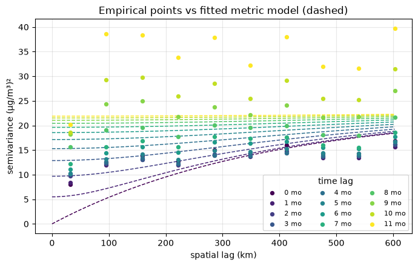
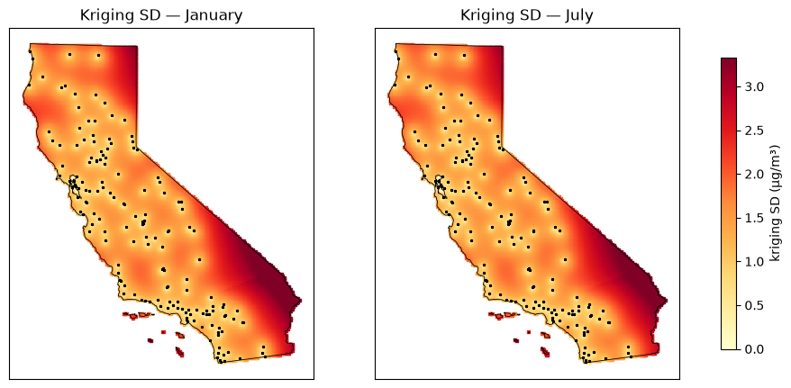
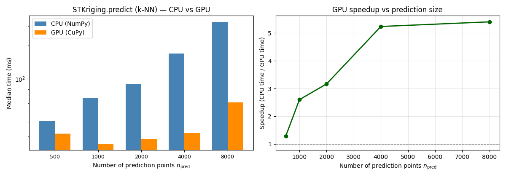

Spatio-temporal ordinary kriging extends ordinary kriging from a map to a monitoring network through time. Each observation is a triple \((\mathbf{u}_i, t_i, Z(\mathbf{u}_i, t_i))\) — a station location, a time stamp, and a continuous measurement. The estimator is still a Best Linear Unbiased Estimator (BLUE) of \(Z(\mathbf{u}_0, t_0)\), but the covariance now depends on both a spatial lag and a temporal lag.
This is the everyday setting of an environmental monitoring network (air quality, groundwater, weather): sites are fixed, time is repeated, and a few stations may miss a month. It is not the same as this library’s Poisson space-time kriging (STPoissonKriging), which is for areal rates that need a population-reliability correction. PM2.5 here is a directly measured concentration.
Step
What we do
Data
Load daily CA PM2.5 for 2025 (163 stations); aggregate to monthly means; project to California Albers (EPSG:3310, meters)
Split
Hold out 25 complete stations entirely (~15%); train on the remaining 138 (including 7 with partial-year coverage)
Variogram
Estimate the empirical space-time semivariogram on complete training stations; fit a metric ST model
ST kriging
Fit STKriging on all training station-months; predict with a local neighborhood (nmax=20)
Validation
Predict every held-out station-month; report RMSE, MAE, \(R^2\) vs a naive-mean baseline
Forecast
Predict month index 12 (one month past December 2025) at a few training sites
Mapping
Predict PM2.5 and kriging standard error on a 5 km grid covering California, all 12 months
CPU / GPU
Time k-NN STKriging.predict on CPU vs GPU using sgsim CA-like PM2.5 (\(n=8{,}400\))
By the end you will have a validated space-time interpolator, a monthly PM2.5 surface for California in 2025, and a CPU vs GPU timing of local ST kriging on an SGS-simulated dense panel.
2. What is Spatio-Temporal Kriging?
Ordinary kriging estimates a continuous variable \(Z\) at an unobserved location as a weighted linear combination of \(N\) nearby observations,
The sum-to-one constraint makes the estimator unbiased when the mean of \(Z\) is unknown. The weights minimize estimation variance subject to that constraint.
A monitoring network reports \(Z(\mathbf u_i, t_i)\): the same quantity at a set of fixed stations, repeated over time. The estimator and the unbiasedness constraint are unchanged. What changes is the covariance: \(C\) must be a function of both a spatial lag \(h_s=\lVert\mathbf u_i-\mathbf u_j\rVert\) and a temporal lag \(h_t=|t_i-t_j|\),
pygstat.STKriging is a thin wrapper around pygstat.krige_st.krige_st (a Python port of gstat’s krigeST; Pebesma, 2012). It stores the training space-time observations and exposes .predict() / .predict_id() without requiring a complete site \(\times\) time grid — unlike empirical variogram estimation, which does need one.
When to use it
You have a continuous variable observed at points, repeatedly in time
You want to interpolate at unsampled locations and/or unsampled times
Stations need not share the exact same time stamps (an irregular panel is fine for kriging)
When not to use it
Count / rate data over polygons with unequal population — use STPoissonKriging
A purely spatial snapshot with no time dimension — use ordinary or simple kriging
A strong, known trend in space or time that should be modeled explicitly — consider universal or regression kriging in space-time
3. How Space-Time Kriging Works
3.1 The kriging system
The weights \(\lambda_i\) and a Lagrange multiplier \(\mu\) solve
where \(V_{ij}=C\big((\mathbf u_i,t_i)-(\mathbf u_j,t_j)\big)\) and \(v_{0,i}=C\big((\mathbf u_i,t_i)-(\mathbf u_0,t_0)\big)\). Covariance and semivariogram are related by \(C(h)=C(0)-\gamma(h)\).
3.2 The metric space-time model
This tutorial uses the metric model (Pebesma, 2012): space and time are folded into one joint (anisotropic) distance
\[
h_{st} = \sqrt{h_s^2 + (a\,h_t)^2},
\]
where \(a\) (stAni, meters per month here) makes space and time commensurable, and a single ordinary variogram \(\gamma(h_{st})\) is fit to it. It is the simplest space-time model and a robust default when you do not have a strong prior for separate spatial and temporal structure.
pygstat.st_variogram_models also implements separable, productSum, and sumMetric models for cases with distinct spatial/temporal structure.
3.3 Empirical semivariogram
The empirical semivariogram is the Matheron estimator, binned jointly by spatial and temporal lag:
where \(N(h_s,h_t)\) collects station-month pairs whose spatial distance falls in the \(h_s\) bin and whose time difference equals \(h_t\). empirical_st_variogram needs a complete station \(\times\) month matrix (every station observed every month). A handful of incomplete stations are dropped for this step only; they are still used as kriging neighbors.
3.4 Local (neighborhood) kriging
Solving the kriging system against every training observation scales as \(O(N^3)\). STKriging.predict(..., nmax=20) instead builds each prediction from its nmax nearest space-time neighbors, found by a KD-tree in the scaled \((x, y, a\cdot t)\) space — the same local-neighborhood strategy gstat’s krigeST uses, and the space-time analogue of local ordinary kriging.
Every prediction point is independent, so pygstat stacks the local systems into one (n_pred, nmax, nmax) batched xp.linalg.solve — NumPy on CPU, CuPy on GPU (use_gpu). Global kriging (nmax=inf) still uses the dense \(n_{\mathrm{train}}\times n_{\mathrm{train}}\) path on CPU.
4. Python Setup
STKriging(..., use_gpu=...) dispatches the batched k-NN solve:
Value
Behaviour
'auto' (default)
GPU when CuPy can run a kernel on this card. Falls back to CPU otherwise.
True
Force GPU. Warns and falls back to CPU if CuPy is missing or cannot run a kernel.
False
Always CPU (NumPy/SciPy).
This notebook probes the GPU once with cupy_gpu_usable() and stores the result in USE_GPU. STKriging(...) calls below pass use_gpu=USE_GPU. The CA maps in §13 use k-NN (so they can run on GPU); §14 times that path on an SGS-simulated CA-like PM2.5 panel with \(n > 5{,}000\). Global kriging (nmax=inf) is CPU-only.
Install CuPy with pip install pygstat[gpu] (CUDA 11) or pip install cupy-cuda12x for CUDA 12.
Code
%matplotlib inlineimport sys, os, warningswarnings.filterwarnings("ignore")sys.modules.setdefault("tensorflow", None)sys.path.insert(0, os.path.abspath("../src"))import numpy as npimport pandas as pdimport geopandas as gpdimport matplotlib.pyplot as pltfrom sklearn.metrics import mean_squared_error, mean_absolute_error, r2_scoreimport pygstatfrom pygstat import STKriging, load_ca_pm25_panel, sgsimfrom pygstat.krigeST import make_prediction_gridfrom pygstat.st_variogram_models import ( empirical_st_variogram, fit_metric_st_variogram, variogram_line, joint_nugget_sill_range,)from pygstat.utils.backend import CUPY_AVAILABLE, cupy_gpu_usableprint(f"pygstat version : {pygstat.__version__}")print(f"NumPy : {np.__version__}")print(f"pandas : {pd.__version__}")# ── STKriging batched k-NN: CPU / GPU dispatch (CuPy) ──────────────────────────# cupy_gpu_usable() runs a real kernel (not just `import cupy`).USE_GPU = cupy_gpu_usable()if USE_GPU:import cupy as cpprint(f"CuPy : {cp.__version__}")try: name = cp.cuda.runtime.getDeviceProperties(0)["name"]ifisinstance(name, bytes): name = name.decode()print(f"GPU (CuPy) : {name}")exceptException:print("GPU (CuPy) : available")print("Backend : GPU (CuPy) — STKriging batched k-NN solve on GPU")else:if CUPY_AVAILABLE:import cupy as cpprint(f"CuPy : {cp.__version__} (installed, but cannot run a kernel on this GPU/CUDA setup)")else:print("CuPy : not installed (pip install pygstat[gpu] or cupy-cuda12x)")print("Backend : CPU (NumPy)")print(f"use_gpu : {USE_GPU}")rng = np.random.default_rng(0)MONTH_NAMES = ["Jan", "Feb", "Mar", "Apr", "May", "Jun","Jul", "Aug", "Sep", "Oct", "Nov", "Dec"]
data/CA_pm25_2025.csv holds daily PM2.5 (µg/m³) at 163 California air-quality stations through 2025 (Site ID, Lat, Long, Date, Daily_PM2.5_ug_m3). load_ca_pm25_panel aggregates daily readings to monthly station means and projects coordinates from lat/long (EPSG:4326) to California Albers Equal Area (EPSG:3310, meters), so spatial distances in the variogram and kriging system are in a metric unit.
Code
raw = pd.read_csv("../data/CA_pm25_2025.csv")print(f"Daily file : {raw.shape[0]:,} rows, {raw['Site ID'].nunique()} stations")print(f"Date range : {raw['Date'].min()} -> {raw['Date'].max()}")raw.head()
Daily file : 59,566 rows, 163 stations
Date range : 01/01/2025 -> 12/31/2025
Site ID
State
County
Lat
Long
Date
Daily_PM2.5_ug_m3
Daily_AQI
0
60010009
California
Alameda
37.743065
-122.169935
01/01/2025
12.2
57
1
60010009
California
Alameda
37.743065
-122.169935
01/02/2025
9.2
51
2
60010009
California
Alameda
37.743065
-122.169935
01/03/2025
7.7
43
3
60010009
California
Alameda
37.743065
-122.169935
01/04/2025
5.8
32
4
60010009
California
Alameda
37.743065
-122.169935
01/05/2025
6.7
37
Code
panel = load_ca_pm25_panel("../data/CA_pm25_2025.csv")counts = panel.groupby("site_id").size()complete_sites = counts[counts ==12].index.to_numpy()print(f"Monthly panel : {panel.shape[0]:,} site-month rows")print(f"Stations : {panel['site_id'].nunique()}")print(f"Complete 12-mo: {len(complete_sites)} / {panel['site_id'].nunique()} "f"(used for variogram estimation; all stations are used for kriging)")print(f"PM2.5 (µg/m³) : mean={panel['pm25'].mean():.2f} "f"min={panel['pm25'].min():.2f} max={panel['pm25'].max():.2f}")panel.head()
Monthly panel : 1,935 site-month rows
Stations : 163
Complete 12-mo: 156 / 163 (used for variogram estimation; all stations are used for kriging)
PM2.5 (µg/m³) : mean=7.01 min=-0.50 max=39.05
Annual-mean PM2.5 is highest in the Central Valley and the South Coast and lowest along the north coast and Sierra. The six example series show a shared seasonal pattern (higher in winter) plus station-to-station differences — the two ingredients a space-time covariance has to capture.
6. Hold-Out Station Split
To test genuine spatial-temporal extrapolation (not just interpolating a missing month at a known site), we hold out 25 stations with complete 12-month coverage entirely. Every month at those sites is predicted from neighbors among the remaining 138 stations. The 7 stations with partial-year coverage stay in the training set: STKriging does not need a complete grid.
empirical_st_variogram needs a complete station \(\times\) month matrix, so this step uses only training stations with all 12 months. Temporal lags are the integer month differences \(0, 1, \ldots, 11\); spatial lags are equal-width bins out to half the maximum pairwise distance.
Semivariance grows with both spatial distance and temporal lag: nearby stations in the same month are more alike than distant stations many months apart. That joint structure is what the metric model will compress into a single distance \(h_{st}\).
8. Fit the Metric ST Model
fit_metric_st_variogram builds a metric vgm_st model with data-driven starting values (nugget, partial sill, range, stAni) and fits it to the empirical cells by weighted least squares.
Code
fitted_model = fit_metric_st_variogram(emp)nugget, sill, prange = joint_nugget_sill_range(fitted_model["joint"])st_ani = fitted_model["stAni"]print(f"stModel : {fitted_model['stModel']}")print(f"nugget : {nugget:.3f} (µg/m³)²")print(f"psill : {sill:.3f} (µg/m³)²")print(f"range : {prange/1000:.1f} km")print(f"stAni : {st_ani/1000:.1f} km / month")print(f"MSE : {fitted_model['MSE']:.4f}")print(f"\nOne month of time is equivalent to {st_ani/1000:.0f} km of space "f"under the fitted anisotropy.")
stModel : metric
nugget : 0.000 (µg/m³)²
psill : 23.031 (µg/m³)²
range : 374.5 km
stAni : 102.1 km / month
MSE : 28.4358
One month of time is equivalent to 102 km of space under the fitted anisotropy.
Code
fig, ax = plt.subplots(figsize=(7, 4.5))show_lags =sorted(set(emp["timelag"]))colors = plt.cm.viridis(np.linspace(0, 1, len(show_lags)))h = np.linspace(0, emp["dist"].max(), 120)for lag, c inzip(show_lags, colors): m = emp["timelag"] == lag ax.scatter(emp["dist"][m] /1000, emp["gamma"][m], s=18, color=c, label=f"{lag:.0f} mo", zorder=3) hh = np.sqrt(h **2+ (st_ani * lag) **2) ax.plot(h /1000, variogram_line(fitted_model["joint"], hh, covariance=False),"--", color=c, linewidth=1.1)ax.set_xlabel("spatial lag (km)")ax.set_ylabel("semivariance (µg/m³)²")ax.set_title("Empirical points vs fitted metric model (dashed)")ax.legend(fontsize=8, ncol=3, title="time lag")ax.grid(True, alpha=0.3)plt.tight_layout()plt.show()

Each color is one temporal lag. The metric model raises the whole curve as \(h_t\) grows (because \(h_{st}\) includes \(a h_t\)) while keeping a single nugget–sill–range shape. A good fit means the dashed lines track the points across lags, not just at \(h_t = 0\).
9. Fit STKriging
STKriging.fit stores all 138 training stations (complete and partial-year). No complete grid is required here — only the earlier variogram estimation step needed one. Predictions will use nmax=20 nearest space-time neighbors.
Fitted STKriging on 1635 observations from 138 stations
10. Validate on Held-Out Stations
Predict every station-month of the 25 held-out stations from their nearest training neighbors, and compare against a naive baseline: the overall training-mean PM2.5, which uses no spatial or temporal information.
If RMSE is well below the naive-mean baseline, the space-time covariance is doing real work: nearby stations and nearby months are informing the prediction. Residual RMSE that varies by month usually tracks the seasonal amplitude of PM2.5 (winter is harder).
11. Leave-One-Out Check
predict_id re-predicts one of the known training observations after excluding it from its own neighbor search. Ten random training station-months:
Predicting month index 12 (one month past December 2025) is pure temporal extrapolation at known station coordinates, using only the fitted space-time covariance — no future observations.
The forecast is a kriging interpolator in \((x, y, a t)\) space, not a dynamical air-quality model. Treat the kriging standard error as a lower bound on uncertainty: it captures spatial-temporal sampling density, not process misspecification (fires, stagnation events, and so on).
13. Map PM2.5 on a California Grid
The usual end product is a continuous map. We extract California’s boundary from data/US_STATE.shp, build a 5 km \(\times\) 5 km grid clipped to it (make_prediction_grid), and predict at every cell for each of the 12 months.
For a production map we refit STKriging on the full 163-station panel (rather than the train/test split), reusing the metric variogram fitted above. Ordinary kriging has no positivity constraint, so a handful of cells far from any station can come out slightly negative; those are clipped to 0.
# Kriging standard error for January and July, plus stationsfig, axes = plt.subplots(1, 2, figsize=(12, 6), sharex=True, sharey=True)sd_max = grid_pred["pm25_sd"].quantile(0.98)for ax, m, title inzip(axes, [0, 6], ["January", "July"]): sub = grid_pred[grid_pred["month"] == m] sc = ax.scatter(sub["x"], sub["y"], c=sub["pm25_sd"], cmap="YlOrRd", vmin=0, vmax=sd_max, s=5, marker="s") ca.boundary.plot(ax=ax, color="black", linewidth=0.6) ax.scatter(panel["x"], panel["y"], s=6, c="k", marker=".", alpha=0.5) ax.set_title(f"Kriging SD — {title}") ax.set_xticks([]) ax.set_yticks([])fig.colorbar(sc, ax=axes, shrink=0.7, label="kriging SD (µg/m³)")plt.show()

The monthly maps recover the well-known California pattern: winter peaks in the Central Valley, cleaner conditions along the coast, and a summer contrast driven by wildfire and photochemistry. The standard-error maps are high where stations are sparse (eastern deserts, far north) and low in the South Coast and Central Valley networks — a map of how well the data constrain the estimate, not of PM2.5 itself.
14. CPU vs GPU ST Kriging Timing
The ~1,600-row CA station panel is too small for a GPU comparison: the batched ST-kriging solve is a stack of tiny \(k\times k\) systems, and host→device copies dominate. Here we simulate a CA-like monthly PM2.5 panel with Sequential Gaussian Simulation (pygstat.sgsim) so that \(n_{\mathrm{train}} > 5{,}000\), then time k-nearest-neighbor ST kriging (nmax=20) on CPU (use_gpu=False) versus GPU (use_gpu=True).
Simulation recipe (conditioned on the real 163 stations):
Draw \(n_{\mathrm{sites}} = 700\) random locations in the California bounding box.
Simulate \(\log(\mathrm{PM2.5})\) with sgsim (exponential variogram, practical range 250 km, conditioned on station-mean PM2.5 from data/CA_pm25_2025.csv) and back-transform with \(\exp(\cdot)\).
Expand each site across 12 months using the observed statewide monthly relative seasonality, giving \(n_{\mathrm{train}} = 8{,}400\).
Draw a separate prediction set of \((x, y, t)\) locations (no values needed — kriging only needs coordinates plus the training data).
Unlike global ordinary kriging, the GPU work scales with \(n_{\mathrm{pred}}\) (one stacked solve of shape (n_pred, nmax, nmax) per predict call), not \(n_{\mathrm{train}}^3\). Training size is therefore held at 8{,}400 and we vary \(n_{\mathrm{pred}}\). The metric ST model is the fitted CA model from §8, so fitting \(\gamma\) is not in the times. Each timing is fit plus predict(..., nmax=20, compute_var=True).
Each timing is the median of three fit + predict calls after a short GPU warmup so CUDA kernel compilation is not counted. If CuPy cannot run a kernel here, the GPU column is skipped.
Simulating 700 CA-like PM2.5 sites with sgsim, then 12 months
conditioning : 163 station means from data/CA_pm25_2025.csv
vario : azimuth=0, nugget=0.009, range=250 km, exponential, log(PM2.5)
sgsim wall : 5.1 s (not included in STKriging times)
simulated PM2.5 : [1.07, 25.30] µg/m³ (CA observed [-0.50, 39.05])
GPU usable : True
Repeats : 3 (median wall time of STKriging fit + predict, k-NN)
n_train : 8400 (sgsim CA-like PM2.5 panel, 700 sites × 12 months)
n_pred : [500, 1000, 2000, 4000, 8000] (random locations/months in the CA bbox)
neighbors : nmax=20; metric ST model from §8 (CA PM2.5 panel)
dataset n_train n_pred CPU (ms) GPU (ms) speedup match
CA PM2.5 (sgsim) 8400 500 41.2 31.9 1.29× True
CA PM2.5 (sgsim) 8400 1000 66.3 25.5 2.60× True
CA PM2.5 (sgsim) 8400 2000 89.7 28.3 3.17× True
CA PM2.5 (sgsim) 8400 4000 168.8 32.3 5.23× True
CA PM2.5 (sgsim) 8400 8000 328.3 60.8 5.40× True

Predictions and kriging standard errors from the two backends should match (match = True). The GPU speedup comes from the batched \((n_{\mathrm{pred}}, k, k)\) space-time kriging solve (covariance + xp.linalg.solve), not from SGS (simulation is CPU sequential and is excluded from the times). Small \(n_{\mathrm{pred}}\) can show little GPU gain because kernel-launch overhead dominates; as the prediction set grows the stacked solve keeps the GPU several times faster. Use use_gpu=USE_GPU with a finite nmax so the same cells run on a laptop CPU or a CUDA workstation without edits.
15. Summary and Conclusions
This tutorial walked through a complete spatio-temporal ordinary kriging workflow for California monthly PM2.5.
What we did
Aggregated daily station readings to a monthly panel and projected locations to EPSG:3310.
Held out 25 complete stations so validation is true spatial-temporal extrapolation.
Estimated the empirical space-time semivariogram on complete training stations and fitted a metric model (\(\gamma(h_{st})\) with \(h_{st}=\sqrt{h_s^2+(a h_t)^2}\)).
Fitted STKriging on all training station-months and predicted with a local neighborhood (nmax=20).
Reported RMSE, MAE, \(R^2\), and a naive-mean baseline on the held-out stations.
Mapped predicted PM2.5 and kriging standard error on a 5 km California grid for all 12 months.
Timed k-NN STKriging.predict on CPU vs GPU using an SGS-simulated CA-like panel (\(n_{\mathrm{train}}=8{,}400\)).
Practical takeaways
Variogram estimation needs a complete panel; kriging does not. Drop incomplete stations only for \(\hat\gamma\), then use every observation as a neighbor.
Hold out whole stations, not random station-months, if you care about interpolating at unsampled locations.
The metric model is a robust default. If space and time clearly have different ranges or sills, try separable or sumMetric via vgm_st / fit_st_variogram.
Local kriging (nmax) is what makes statewide mapping practical. Global ST kriging on \(\sim 2{,}000\) observations is already slow; on a 16k-cell grid it is not feasible.
Ordinary kriging can produce slightly negative concentrations far from data. Clip to the physical range after kriging, and treat those cells as poorly supported (check \(\sigma\)).
CPU / GPU. k-NN ST kriging (nmax finite, use_gpu=USE_GPU) batches one (n_pred, nmax, nmax) solve. GPU work scales with \(n_{\mathrm{pred}}\), not \(n_{\mathrm{train}}^3\). The 163-station CA panel is too small to show that; §14 uses SGS so \(n > 5{,}000\).
Next steps
3-D kriging (Tutorial/09_kriging_3d.ipynb) when the third coordinate is depth, not time
Spatio-temporal Poisson kriging (STPoissonKriging) for areal disease or mortality rates
Indicator kriging if you need exceedance probabilities without a Gaussian assumption
16. Resources
Textbooks and software papers
Reference
Notes
Pebesma, E. (2012). spacetime: Spatio-Temporal Data in R. Journal of Statistical Software, 51(7).
Source of gstat’s krigeST / vgmST; this module is a Python port
Cressie, N. & Wikle, C.K. (2011). Statistics for Spatio-Temporal Data. Wiley.